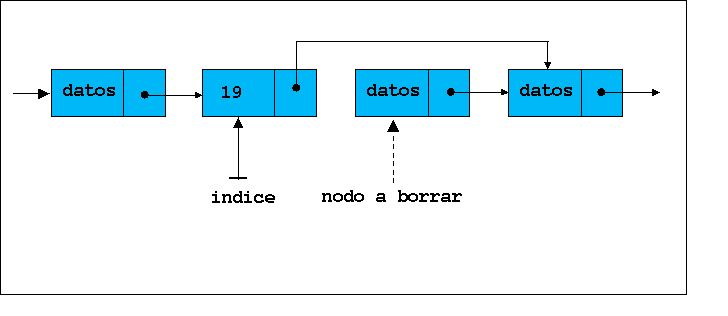
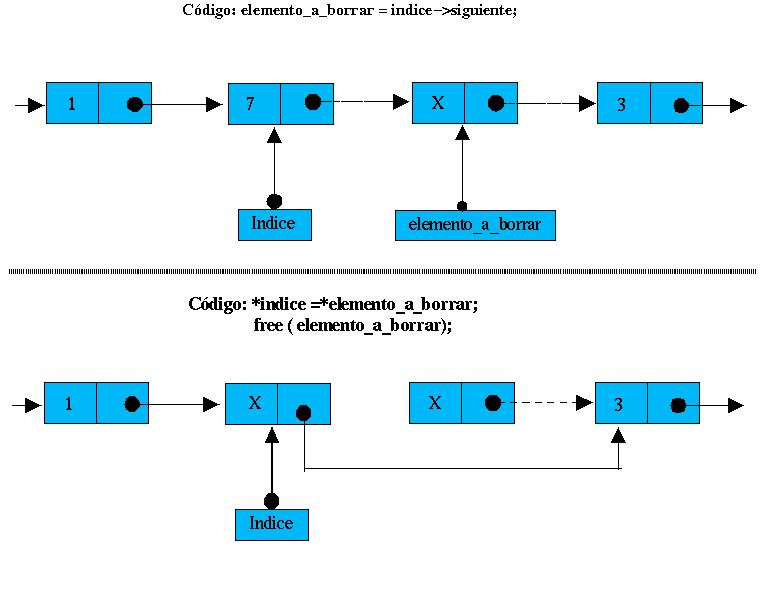

|
|
|
|
|
12.- Listas, colas y pilas (por el dr7tbien)
12.1.-Crear el primer elemento de una lista (por el dr7tbien)
12.2.-Añadir elementos a una lista (por el dr7tbien)
12.3.-Avanzar por los elementos de una lista (por el dr7tbien)
12.4.- Agregar elementos en una lista delante o detrás de otro apuntado por *indice (por el dr7tbien)
12.5.- Borrado de nodos en listas (por el dr7tbien)
12.6.- Desarrollo de un programa con lista simple (por el dr7tbien)
12.7.-Ordenamiento de la lista por orden alfabético ascendente. El concepto de doble puntero (por el dr7tbien)
12.8.- Listas circulares y doblemente enlazadas. Desarrollo de un programa con una lista doble (por el dr7tbien)
12.9.- Pilas y colas (por el dr7tbien)
 12.5.- Borrado de
nodos en listas
12.5.- Borrado de
nodos en listas
Al
igual que en el agregado de elementos, se puede borrar el elemento
siguiente a indice o el mismo elemento apuntado por indice.
El código para borrar el elemento siguiente al apuntado por
indice es el siguiente:
|
struct datos
*elemento_a_borrar; |
Esquemáticamente
esto sería así:

Para
borrar el elemento apuntado por indice haremos una copia del
este nodo elemento apuntado código necesario sería:
|
struct datos
*elemento_a_borrar; |
Una vez borrado el elemento, liberamos el espacio de memoria mediante la función free(). Observa como queda esto esquemáticamente:

|
|
|
|||